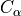
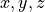
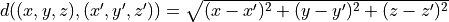

Lezione 4 - Soluzioni
Esercizi
Come faccio a:
Creare una stringa che abbia, come testo, cinque spazi.
Controllare che una stringa contenga almeno uno spazio.
Controllare che una stringa contenga cinque caratteri.
Creare una stringa vuota, e controllare che sia vuota.
Creare una stringa che contenga cento ripetizioni di
Python e' bello tra la la.Date le stringhe
"ma biologia","molecolare"e"e' meglio", creare una stringa composta"ma biologia molecolare e' meglio"e poi replicarla mille volte.Controllare se la stringa
"12345"comincia con il carattere 1.Creare una stringa che contenga il solo carattere
\. Controllate conprint, elen()!Controllare che il carattere
xappaia almeno tre volte all’inizio o alla fine di una stringa. Ad esempio, questo e’ vero per:"x....xx" # 1 + 2 >= 3 "xx....x" # 2 + 1 >= 3 "xxxx..." # 4 + 0 >= 3
Ma non per:
"x.....x" # 1 + 1 < 3 "...x..." # 0 + 0 < 3 "......." # 0 + 0 < 3
Data la stringa:
s = "0123456789"
Quali delle seguenti estrazioni sono corrette?
s[9]s[10]s[:10]s[1000]s[0]s[-1]s[1:5]s[-1:-5]s[-5:-1]s[-1000]
Creare una stringa che contenga letteralmente le seguenti due righe di testo, inclusi apici e virgolette:
urlo’: “non farti vedere mai piu’!”
“d’accordo”, rispose il bassotto.
Ci sono almeno due modi per farlo.
Calcolare il valore di 1/7 in Python, ottenendo un
float; mettere il risultato ottenuto nella variabilevalore. Controllare se:Vi appare la cifra 9.
I primi sei decimali sono uguali ai secondi sei?
Hint: si puo’ risolvere facilmente l’esercizio convertendo
valoredafloatastr.Date le stringhe:
stringa = "a 1 b 2 c 3" digit = "DIGIT" character = "CHARACTER"
rimpiazzare tutte le cifre con il testo della variabile
digit, e tutti i caratteri alfabetici con quello dicharacter.Opzionalmente, fare tutto in una sola riga di codice.
Data la sequenza primaria della catena A della Tumor Suppressor Protein TP53, riportata qui sotto:
chain_a = """SSSVPSQKTYQGSYGFRLGFLHSGTAKSVTCTYSPALNKM FCQLAKTCPVQLWVDSTPPPGTRVRAMAIYKQSQHMTEVV RRCPHHERCSDSDGLAPPQHLIRVEGNLRVEYLDDRNTFR HSVVVPYEPPEVGSDCTTIHYNYMCNSSCMGGMNRRPILT IITLEDSSGNLLGRNSFEVRVCACPGRDRRTEEENLRKKG EPHHELPPGSTKRALPNNT"""
Di quante righe e’ composta la sequenza? (Hint: e’ sufficiente contare quanti caratteri di a capo ci sono, e poi …)
Quanto e’ lunga la sequenza? (Non l’intera stringa: tenete conto dell’esercizio precedente.)
Rimuovere i caratteri di a capo e mettere il risultato in una nuova variabile
sequenza. Controllare se le risposte ai punti precedenti sono corrette.Quante cisteine
"C"ci sono nella sequenza? Quante istidine"H"?La catena contiene la sotto-sequenza
"NLRVEYLDDRN"? In che posizione?Come posso usare
find()e l’estrazione[indice_inizio:indice_fine]per estrarre la prima riga della stringachain_a?
Data (una piccola parte) della sequenza terziaria della catena A di TP53:
structure_chain_a = """SER A 96 77.253 20.522 75.007 VAL A 97 76.066 22.304 71.921 PRO A 98 77.731 23.371 68.681 SER A 99 80.136 26.246 68.973 GLN A 100 79.039 29.534 67.364 LYS A 101 81.787 32.022 68.157"""
Ogni riga rappresenta un atomo  del backbone della struttura. Di quell’atomo sono riportati, in ordine: il codice del residuo cui appartiene, la catena a cui appartiene (sempre
"A"nel nostro caso), la posizione del residuo nella sequenza primaria, e le coordinate  del residuo nello spazio tridimensionale.Estrarre la seconda riga usando
find()e l’estrazione[i:j], e metterla in una nuova variabileriga.Estrarre le coordinate del residuo, e metterle in tre variabili
x,y, ez.Ripetere il tutto per la terza riga, e mettere le coordinate in
x_prime, y_prime, z_prime.Calcolare la distanza Euclidea tra i due residui:

Hint: per calcolare la distanza e’ necessario usare dei
float.
Scaricate i file contenuti nel seguente archivio
zip. Il comando:dna = open("data/dna-fasta/fasta.1").readlines()[2] print(dna)
legge le sequenze di nucleotidi contenute nel file
data/dna-fasta/fasta.1(a patto chepythonsia stato lanciato nella directory giusta) e restituisce una stringa, che noi mettiamo nella variabiledna.La stringa in
dnae’ vuota? Quanto e’ lunga? Contiene dei caratteri di a capo? (In caso affermativo, rimuoverli.)I primi tre caratteri sono identici agli ultimi tre?
I primi tre caratteri sono palindromi rispetto agli ultimi tre?
Sostituire
AconAde,CconCyt, etc. facendo in modo che i singoli residui siano separati da spazi" ". Mettere il risultato in una nuova variabiledna_espanso.
Soluzioni
Note
In alcune soluzioni uso il carattere \ alla fine di una riga di codice.
Usato in questo modo, \ spiega a Python che il comando continua alla
riga successiva. Se non usassi \, Python potrebbe pensare che il
comando finisca li’ e quindi che sia sintatticamente sbagliato – dando
errore.
Potete tranquillamente ignorare questi \.
Soluzioni:
Soluzione:
# 12345 testo = " " print(testo) print(len(testo))
Soluzione:
almeno_uno_spazio = " " in testo # controllo che funzioni print(" " in "nonc'e'alcunospazio") print(" " in "c'e'unsolospazioqui--> <--") print(" " in "ci sono parecchi spazi")
Soluzione:
esattamente_cinque_caratteri = len(testo) == 5 # controllo che funzioni print(len("1234") == 5) print(len("12345") == 5) print(len("123456") == 5)
Soluzione:
stringa_vuota = "" print(len(stringa_vuota) == 0)
Soluzione:
base = "Python e' bello tra la la" ripetizioni = base * 100 # mi assicuro che almeno la lunghezza sia giusta print(len(ripetizioni) == len(base) * 100)
Soluzione:
parte_1 = "ma biologia" parte_2 = "molecolare" parte_3 = "e' meglio" testo = (parte_1 + " " + parte_2 + " " + parte_3) * 1000
Provo cosi’:
comincia_con_1 = "12345".startswith(1)
ma Python mi da’ errore:
Traceback (most recent call last): File "<stdin>", line 1, in <module> TypeError: startswith first arg must be str or a tuple of str, not int # ^^^^^^^^^^^^^^^^^^^^^ ^^^^^^^
L’errore ci dice (vedi parte evidenziata) che
startswith()richiede che l’argomento sia una stringa, non un intero come nel nostro caso: noi invece le abbiamo passato1, che e’ un intero.La soluzione quindi e’:
comincia_con_1 = "12345".startswith("1") print(comincia_con_1)
che vale
True, come mi aspettavo.Soluzione:
stringa = "\\" stringa print(stringa) print(len(stringa)) # 1
Soluzione:
condizione = \ testo.startswith("xxx") or \ (testo.startswith("xx") and testo.endswith("x")) or \ (testo.startswith("x") and testo.endswith("xx")) or \ testo.endswith("xxx")
Vale la pena di controllare usando gli esempi nell’esercizio.
Soluzione:
s = "0123456789" print(len(s)) # 10
Quali delle seguenti estrazioni sono corrette?
s[9]: corretta, estrae l’ultimo carattere.s[10]: invalida.s[:10]: corretta, estrae tutti i caratteri (ricordate che in secondo indice,10in questo caso, e’ esclusivo.)s[1000]: invalida.s[0]: corretta, estrae il primo carattere.s[-1]: corretta, estrae l’ultimo carattere.s[1:5]: corretta, estrae dal secondo al sesto carattere.s[-1:-5]: corretta, ma non estrae niente (gli indici sono invertiti!)s[-5:-1]: corretta, estrae dal sesto al penultimo carattere.s[-1000]: invalida.
Soluzione (una di due):
testo = """urlo': \"non farti vedere mai piu'!\" \"d'accordo\", rispose il bassotto."""
Soluzione:
valore = 1.0 / 7.0 print(valore) # 0.14285714285714285 valore_come_stringa = str(valore) print(valore_come_stringa) # "0.14285714285714285" print("9" in valore_come_stringa) # False indice_punto = valore_come_stringa.find(".") primi_sei_decimali = valore_come_stringa[indice_punto + 1 : indice_punto + 1 + 6] secondi_sei_decimali = valore_come_stringa[indice_punt + 1 + 6 : indice_punti + 1 + 6 + 6] print(primi_sei_decimali == secondi_sei_decimali) # True
Soluzione:
stringa = "a 1 b 2 c 3" digit = "DIGIT" character = "CHARACTER" risultato = stringa.replace("1", digit) risultato = risultato.replace("2", digit) risultato = risultato.replace("3", digit) risultato = risultato.replace("a", character) risultato = risultato.replace("b", character) risultato = risultato.replace("c", character) print(risultato) # "CHARACTER DIGIT CHARACTER ..."
In una sola riga:
print(stringa.replace("1", digit).replace("2", digit) ...)
Soluzione:
chain_a = """SSSVPSQKTYQGSYGFRLGFLHSGTAKSVTCTYSPALNKM FCQLAKTCPVQLWVDSTPPPGTRVRAMAIYKQSQHMTEVV RRCPHHERCSDSDGLAPPQHLIRVEGNLRVEYLDDRNTFR HSVVVPYEPPEVGSDCTTIHYNYMCNSSCMGGMNRRPILT IITLEDSSGNLLGRNSFEVRVCACPGRDRRTEEENLRKKG EPHHELPPGSTKRALPNNT""" numero_righe = chain_a.count("\n") + 1 print(numero_righe) # 6 # NOTA: qui voglio la lunghezza della *sequenza*, non della *stringa* lunghezza_sequenza = len(chain_a) - chain_a.count("\n") print(lunghezza_sequenza) # 219 sequenza = chain_a.replace("\n", "") print(len(chain_a) - len(sequenza)) # 5 (giusto) print(len(sequenza)) # 219 num_cisteine = sequenza.count("C") num_istidine = sequenza.count("H") print(num_cisteine, num_istidine) # 10, 9 print("NLRVEYLDDRN" in sequenza) # True print(sequenza.find("NLRVEYLDDRN")) # 106 # controllo print(sequenza[106 : 106 + len("NLRVEYLDDRN")]) # "NLRVEYLDDRN" indice_primo_acapo = chain_a.find("\n") prima_riga = chain_a[:indice_primo_acapo] print(prima_riga)
Soluzione:
structure_chain_a = """SER A 96 77.253 20.522 75.007 VAL A 97 76.066 22.304 71.921 PRO A 98 77.731 23.371 68.681 SER A 99 80.136 26.246 68.973 GLN A 100 79.039 29.534 67.364 LYS A 101 81.787 32.022 68.157""" # uso una variabile di nome piu' corto per comodita' chain = structure_chain_a indice_primo_a_capo = chain.find("\n") indice_secondo_a_capo = chain[indice_primo_a_capo + 1:].find("\n") + len(chain[:indice_primo_a_capo + 1]) indice_terzo_a_capo = chain[indice_secondo_a_capo + 1:].find("\n") + len(chain[:indice_secondo_a_capo + 1]) print(indice_primo_a_capo, indice_secondo_a_capo, indice_terzo_a_capo) seconda_riga = chain[indice_primo_a_capo + 1 : indice_secondo_a_capo] print(seconda_riga) # "VAL A 97 76.066 22.304 71.921" # | | | | | | # 01234567890123456789012345678 # 0 1 2 x = seconda_riga[9:15] y = seconda_riga[16:22] z = seconda_riga[23:] print(x, y, z) # NOTA: sono tutte stringhe terza_riga = chain[indice_secondo_a_capo + 1 : indice_terzo_a_capo] print(terza_riga) # "PRO A 98 77.731 23.371 68.681" # | | | | | | # 01234567890123456789012345678 # 0 1 2 x_prime = terza_riga[9:15] y_prime = terza_riga[16:22] z_prime = terza_riga[23:] print(x_prime, y_prime, z_prime) # NOTA: sono tutte stringhe # converto tutte le variabili a float, altrimenti non posso calcolare i # quadrati e la radice quadrata (ne' tantomeno le differenze) x, y, z = float(x), float(y), float(z) x_prime, y_prime, z_prime = float(x_prime), float(y_prime), float(z_prime) diff_x = x - x_prime diff_y = y - y_prime diff_z = z - z_prime distanza = (diff_x**2 + diff_y*82 + diff_z**2)**0.5 print(distanza)
La soluzione si semplifica moltissimo potendo usare
split():righe = chain.split("\n") seconda_riga = righe[1] terza_riga = righe[2] parole = seconda_riga.split() x, y, z = float(parole[-3]), float(parole[-2]), float(parole[-1]) parole = terza_riga.split() x_prime, y_prime, z_prime = float(parole[-3]), float(parole[-2]), float(parole[-1]) distanza = ((x - x_prime)**2 + (y - y_prime)**2 + (z - z_prime)**2)**0.5
Soluzione:
dna = open("data/dna-fasta/fasta.1").readlines()[2] print(len(dna) == 0) # False print(len(dna)) # 61 print("\n" in dna) # True dna = dna.replace("\n", "") # rimuovo gli 'a capo' dna = dna.strip() # tolgo anche eventuali spazi a dx e sx print(dna[:3]) # "CAT" print(dna[-3:]) # "CTT" print(dna[:3] == dna[-3:]) # False print((dna[0] == dna[-1] and \ dna[1] == dna[-2] and \ dna[2] == dna[-3])) # False risultato = dna.replace("A", "Ade ") risultato = risultato.replace("C", "Cyt ") risultato = risultato.replace("G", "Gua ") risultato = risultato.replace("T", "Tym ") print(risultato) # "Cyt Ade Tym ..."